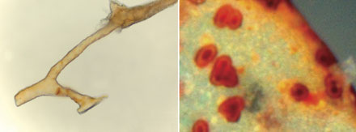
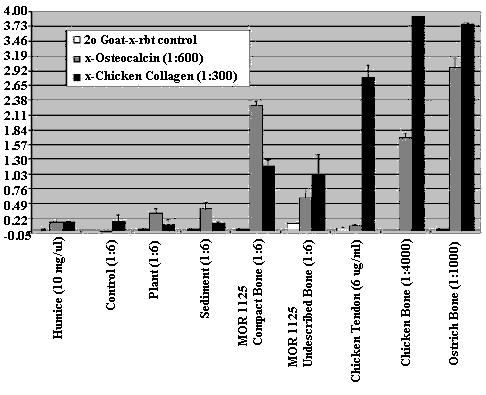

El 24 de marzo de 2005, un equipo de paleontólogos liderado por Mary Higby Schweitzer publicó su descubrimiento de tejidos blandos de dinosaurio recuperados del hueso cortical de un fémur de T. rex. El artículo de tres páginas en la revista Science, publicado por la American Association for the Advancement of Science, presenta el sorprendente descubrimiento de tejidos orgánicos aparentemente preservados. Estos incluyen varios tipos celulares que los autores sienten capaces de delimitar mediante comparación directa con células modernas recuperadas de un fémur de avestruz reciente. (Schweitzer MH, Wittmeyer JL, Horner JR, Toporski JK (2005) Soft-Tissue Vessels and Cellular Preservation in Tyrannosaurus rex. Science 307(5717):1952-1955). Dentro de horas de la publicación de su historia, las listas de correo y los tablones de anuncios de los creacionistas se encendieron alrededor del mundo sobre la nueva "prueba" científica de la creación reciente de la Tierra. Un pequeño y esperanzador cambio respecto al "descubrimiento" similar de Schweitzer en los años 90 es que esta vez tanto ella como Horner han hecho declaraciones directas de que este hallazgo no es una contradicción de las ciencias, ni de una Tierra antigua.
Como he escrito sobre la distorsión creacionista de la investigación anterior sobre tejidos blandos de dinosaurios publicada por Schweitzer, Sangre de dinosaurio y la Tierra joven, algunas personas se preguntaron por qué no había respondido antes. Incluso recibí algunos correos electrónicos que exigían que retractara ese artículo. Esto es un malentendido absurdo de ese artículo, la evidencia en la que se basaba, y la investigación publicada por Schweitzer y varios colegas desde principios de los años 1990.
Puede sorprender a algunas personas, pero no estoy interesado en los dinosaurios. Alquilé la primera película Jurassic Park cuando salió en video, y me salté el resto.
La respuesta de los medios: ¡Lanzad a los clones!
El artículo principal de Science aparece como un informe bastante directo que indica que cuando se eliminó el componente mineral de un fémur de tiranosaurio, permaneció una masa orgánica con características similares a las encontradas en el hueso de avestruz. Schweitzer et al creen haber recuperado material que representaba osteocitos, células sanguíneas y vasos. Establecen que: "Los vasos y sus contenidos son similares en todos los aspectos a los vasos sanguíneos recuperados del hueso de avestruz extinto". (Las fotos de estos pueden verse en el artículo original, y algunas también están disponibles en Tyrannosaur morsels en el blog personal de PZ Myers). Schweitzer et al notablemente no ofrecieron ninguna explicación alternativa para su hallazgo; se basan enteramente en la afirmación de que estos son los tejidos originales del dinosaurio. No es hasta el último párrafo cuando incluso comentan que: "No está claro si la preservación es estrictamente morfológica y el resultado de algún tipo de proceso de sustitución geoquímica desconocido o si se extiende a los niveles subcelular y molecular".
Sin embargo, existen alternativas, como se ha señalado en el artículo de perspectiva que acompaña, escrito por Eric Stokstad en Science, "Tyrannosaurus rex Soft Tissue Raises Tantalizing Prospects" (Science, vol. 307:1852).
In short, there are known instances where reworked material can have the appearance of the 'tissues' reported by Schweitzer et al."Hendrik Poinar de la Universidad McMaster en Hamilton, Ontario, advierte que las apariencias pueden engañar: se han encontrado células protozoicas nucleadas en ámbar de 225 millones de años de antigüedad, pero las pruebas geoquímicas revelaron que los núcleos habían sido reemplazados por compuestos de resina. Incluso la resistencia de los vasos puede ser engañosa. Se han recuperado fósiles flexibles de organismos marinos coloniales llamados graptolitos de rocas de 440 millones de años de antigüedad, pero el material original —probablemente colágeno— no había sobrevivido."
Como casi siempre ocurre, lo más interesante está en el fondo. La gran ventaja que tienen hoy en día las revistas científicas es la capacidad de publicar todos los detalles complementarios en línea. En este caso, el artículo "principal" de tres páginas cuenta con un texto de apoyo cuatro veces más largo. Por ejemplo, el artículo principal ha dejado a muchas personas con la falsa impresión de que los tejidos recuperados estaban en un estado blando y maleable cuando fueron expuestos por primera vez. Esto no es cierto. Todo el material fósil fue rehidratado durante el mismo proceso que eliminó los componentes minerales del hueso. Luego fueron tamponados y también algunos fueron fijados. Los informes de prensa relacionados han creado la impresión de que existen grandes estructuras con las características de tejido fresco. Esto no es cierto. Las estructuras examinadas tienen como máximo unos pocos milímetros de diámetro. El último, y bastante irritante, aspecto de esta investigación no proviene del artículo de Science, ni del material de apoyo, sino de las entrevistas de prensa concedidas por Schweitzer, que repetidamente aluden a la recuperación de ADN e incluso a la clonación.
El ejemplo más absurdo de esto fue un video de 2 minutos distribuido por Associated Press en el anuncio sobre la sangre de dinosaurio de Schweitzer, al cual se enlaza desde el LA Times y otras fuentes de noticias. En resumen, tenemos 37 segundos de clips de "Jurassic Park" con frases como "El ADN de los dinosaurios... es un desastre ..." y luego somos tratados con la única frase de Jack Horner; algo sobre "ADN...ADN...ADN..." seguido de más "Jurassic Park" hasta que, a un minuto del clip, vemos a Mary Schweitzer diciendo su única frase: "No, esto no significa que estemos clonando dinosaurios en nuestro laboratorio, y probablemente no lo haremos". La narradora Rita Foley, con su mejor voz de "las ingenuas son estúpidas™", chilló: "¿Probablemente?!!"
Unas pocas segundos más de los clips de "Jurassic Park" y la ventana para educar al público se cerró.
Se presentó un video significativamente mejor en MSNBC, y está enlazado desde Los científicos recuperan tejido blando de un fósil de T. rex de 70 millones de años que revela vasos sanguíneos preservados. Sin imágenes de "Jurassic Park", pero aquí nuevamente, Schweitzer hizo declaraciones fácilmente malinterpretadas que contradecían su trabajo publicado. Un solo ejemplo fue su afirmación de que el contenido de los vasos podría fácilmente "exprimirse". Dado que no ofreció ningún procedimiento de laboratorio como contexto, esto dejó la impresión de que estos restos simplemente salían del hueso tan frescos como si el dinosaurio hubiera muerto ayer.
Los medios impresos han sido un poco mejores en su reportaje. The Los Angeles Times publicó la noticia el día 25 (en la primera página, debajo del pliegue) y utilizó tres microfotografías del artículo de Science. Pero incluso aquí, se refirieron al material recuperado como "fresco" al mismo tiempo que describían el trabajo de semanas necesario para recuperarlo y reconstituirlo. Sin embargo, obviamente están siguiendo de cerca las declaraciones de Schweitzer respecto a sus resultados. Ella declaró: "Los tejidos siguen siendo blandos. Las microestructuras que parecen células están preservadas de todas las formas" (tal como se cita en el LA Times). Mucho peor fue el editorial posterior publicado en el LA Times. El sesgo anticientífico del editorial se manifestó al referirse a los paleontólogos como "geeks de fósiles". La incompetencia científica del escritor se hizo manifiesta por su consternación ante la posibilidad de clonar un T. rex basándose en el material reportado por Schweitzer. Quedé con la conclusión inevitable de que el autor del editorial no había sido capaz de entender el artículo de su propio reportero, Robert Lee Holtz.
The New York Times tuvo un editorial motivado por el descubrimiento, Una Suavidad Inesperada, que hizo una buena observación sobre la ciencia en general, de que existe una tensión entre, "... el esfuerzo de consolidar los hechos conocidos en una teoría estable. El otro es descubrir nuevos hechos - sin garantía de si reforzarán o socavarán las antiguas consolidaciones." Más allá de este insight, el clonaje de dinosaurios volvió a levantar la cabeza.
Añadiendo combustible al sentido de inferioridad cultural que muchos estadounidenses albergan hacia los británicos, el BBC Word News realizó un trabajo de reportaje mucho superior que está disponible en línea en, El fósil de T. rex tiene 'tejidos blandos'. Allí el lector aprende que: "El Dr. Schweitzer no está haciendo ninguna gran afirmación de que estas trazas blandas sean los restos degradados del material original - solo que dan esa apariencia". Además, otro experto en el pequeño campo de la paleontología molecular, el Prof. Matthew Collins, proporcionó comentarios.
(See Moléculas antiguas y mitos modernos for a discussion of how creationists have distorted Dr. Collins' research in the past)."Esto puede no ser fosilización como la conocemos, de grandes estructuras macroscópicas, sino fosilización a nivel molecular", comentó el Dr. Matthew Collins, quien estudia biomoléculas antiguas en la Universidad de York, Reino Unido. "Mi sospecha es que este proceso ha llevado a la reacción de moléculas más resistentes con las proteínas y carbohidratos normales que componen estas estructuras celulares, y las ha reemplazado, de modo que tenemos un material muy resistente, muy rico en lípidos - un polímero que sería muy difícil de degradar y caracterizar, pero que ha preservado la estructura", le dijo a la BBC.
Además, totalmente distinto del absurdo del video de Associated Press, la BBC citó a Schweitzer con más de un fragmento fuera de contexto sobre el ADN,
In media interviews Jack Horner, Schweitzer's coauthor and former professor, has been much more cautious. He appeared on a radio program, "On Point" broadcast by National Public Radio were Tom Ashcroft interviewed him along with molecular taphonomist Derek Briggs of Yale University, and science writer Carl Zimmer. Then he repeatedly said that they in fact have no idea what the recovered "tissues" are made of, or actually represent. Schweitzer did not appear on the program, but this could mean that there are the familiar disagreements that can occur between coauthors and particularly professors and former students. For example, when Ashcroft asked the question,"En realidad, no trabajo con ADN y mi laboratorio no está configurado para hacerlo", dijo el Dr. Schweitzer. "Nuestro objetivo es más bien observar lo que podemos encontrar con respecto a las proteínas que son codificadas por el ADN.
En gran medida, la mayoría de los estudios químicos realizados sugieren que las proteínas son más duraderas que el ADN y poseen casi el mismo tipo de información, ya que utilizan el ADN como su plantilla."
"Si es tejido blando, ¿qué más podría ser que lo biológico?
Horner respondió: "Bueno, esa es una buena pregunta, pero no creo que avancemos con la suposición de que es {biológico} hasta que podamos realizar nuestros análisis. (aprox. minuto 30 de la entrevista)" También dijo: "Sería bueno saber de qué está hecho este material... si hay proteínas presentes, ¿es biológico?" Y, "No estamos buscando ADN, estamos tratando de determinar de qué se trata este material y por qué es flexible."
La nueva respuesta creacionista: cuanto más cambia, más se mantiene igual.
Correos electrónicos creacionistas y citas de tablones de anuncios.
Existen quizás cientos de sitios web dedicados, al menos en parte, a las visiones conflictivas sobre la ciencia y la religión que están en su punto más agudo al abordar la evolución. Estas discusiones pueden aparecer en algunos contextos extraños, como sitios web dedicados al levantamiento de pesas competitivo, clubes de fans de "Star Wars" y bandas de rock cristiano, así como en los sitios más obvios dedicados al fundamentalismo e incluso al rapto apocalíptico "impending". El primer comentario sobre estos sitios apareció dentro de minutos del anuncio de Schweitzer.
Recibí mi primer correo electrónico creacionista dentro de una hora del anuncio de Schweitzer, que exigía que retractara mi escritura anterior sobre el creacionismo y los dinosaurios y concluyó,
"Hasta ahora, parece que casi todos los nuevos hallazgos se alinean con una 'Tierra joven', y personas como tú, que encuentran tan fácil criticar las opiniones de los creacionistas (muchas de las cuales son especulaciones, lo cual admito), parecen ignorar completamente el HECHO de que toda la teoría de la evolución y los 'millones de años' son especulaciones. Supongo que los 'científicos' pueden usar especulaciones o conjeturas, pero los 'no científicos' creacionistas deben usar siempre ciencia verdadera, observable y reproducible en todos sus argumentos. Bien. Al final, los que toman la Biblia literalmente ganarán. No porque sean siempre perfectos o correctos, sino porque Dios lo es y su Palabra lo es!"
A lo largo de las próximas horas, extendiéndose hasta días, se repitió una opinión similar. Estos y cientos de comentarios similares se reducen a solo unos pocos temas:
-
El descubrimiento fue de tejido blando "fresco" evidente simplemente al romper el hueso,
"Para mí esta muestra de sangre no puede tener millones de años. Como persona que ha asistido a cuerpos fallecidos, las muestras de sangre no pueden estar en estado líquido rodeadas de roca, etc. Esta roca sin duda absorbería cualquier humedad."
"¿Alguien nos dirá cómo el tejido del T-Rex permaneció blando durante más de 65.000.000 de años mientras el resto del cadáver de dinosaurio muerto y en descomposición se pudrió completamente o se fosilizó? ¿Podría la respuesta real estar emergiendo? ¿Es que no es tan viejo como lo presentan los EVO-BABBLERS?"
- El tejido fresco "prueba" que estos huesos son recientes,
"Bajo ninguna condición podría existir tejido blando hace 70 millones de años. Además, la creación tiene solo 6.000 años."
- Los científicos saben que es así, y mienten al público, (una
variación particularmente irónica es que los científicos han sido tan
indoctrinados que son incapaces de reconocer la realidad).
"Tardará unos días que los evolucionistas rodeen el carro y inventen otra explicación tonta."
"Simplemente no puedo creer que los científicos aún persistan con esta teoría de la evolución. Después de tal evidencia contradictoria, ¿por qué los científicos siguen decididos a creer una mentira en lugar de la verdad?"
- La biología evolutiva, y ciencias relacionadas como la geología,
la paleontología y la antropología son anti-Dios, si no realmente
demoníacas.
"Alguien argumentará que el hueso estaba encapsulado en suficiente tierra o roca y privado de oxígeno para que el proceso de descomposición se ralentizara o se detuviera. No puede haber nada que el hombre impensado permita que desafíe su arrogante conocimiento. Pero Dios no será burlado."
"En realidad, el emperador de la evolución sabe que no tiene ropa...solo tiene demasiado invertido en la fachada....su imperio...su propia forma de vida...
Si el emperador deja que incluso un hilo se deshilache en su falacia cuidadosamente elaborada, sabe que todo su tonto imperio se deshará y será expuesto como la fea, desnuda, mentira que es.
Tú y yo nunca podremos mostrar la verdad a un evolucionista dedicado más de lo que ellos nunca nos convencerán de que un mono se convierte en un hombre....porque, eso (la evolución) es en lo que ponen su fe. Así como tú y yo ponemos nuestra fe en Dios y su Palabra.
Hay solo una manera de convencer a tal reino sucio de la verdad...reza que Dios Todopoderoso queme la niebla de intelecto imaginario que usan para esconderse y deja que su luz brille la verdad sobre todos."
Y por supuesto, el constante lema de los creacionistas para todos los propósitos,
{La ortografía y gramática de todas las citas son como en los originales}."La evolución es una de las mentiras más grandes que el diablo jamás inventó para engañar a la humanidad"
Estas creencias ampliamente y fervientemente sostenidas son impulsadas por creacionistas profesionales que se benefician promoviendo la ignorancia.
Los creacionistas profesionales opinan.
El público creacionista está mal atendido por un grupo de profesionales cuyo principal producto es una distorsión escandalosa de la investigación científica. También promueven una versión de la teología sobre la cual no estoy cualificado para comentar personalmente, pero que está claramente contradicha por representantes de casi todas las denominaciones cristianas principales del mundo hoy en día. Esto queda claramente evidenciado por Una carta abierta sobre religión y ciencia que ha sido respaldada, a la fecha de esta redacción, por más de tres mil miembros del clero.
La postura de que la ciencia no es más que una vasta conspiración que vimos anteriormente, defendida por creacionistas de base, es promovida por predicadores como Ken Ham, un ejecutivo del Ministerio Answers in Genesis, Inc. Utilizando medios fundamentalistas y políticamente de extrema derecha, Ham presenta su argumento de que el "sentido común" es más confiable que el estudio científico, y que los científicos están involucrados en un esfuerzo concertado para engañar al público. Él sonó este tema poco después del anuncio de Schweitzer en una entrevista para el "agape press." De su artículo del 6 de abril de 2005 escrito por Allie Martin titulado "Creacionista de la Tierra joven tiene nuevo hueso con qué picar a los evolucionistas", leemos,
"Ham está convencido de que los defensores de la teoría de la evolución no permitirán que el hallazgo de Montana cambie sus opiniones. Aunque, según él, el reciente descubrimiento apoya la teoría del origen de la Tierra joven, cree que los evolucionistas dirán cualquier cosa en lugar de admitir que el relato bíblico de la creación es verdadero."
Hay un genio en esto; Ham inocular a sus seguidores para que ni siquiera presten atención a los datos científicos, y lo hace sin hacer una sola afirmación de hecho.
Solo para añadir más peso, Ham administró una "dosis de refuerzo" unas semanas después, nuevamente en la "prensa agape" y nuevamente en un artículo escrito por Allie Martin. Esta vez, el 22 de abril de 2005, en un ítem titulado, "Creacionista: el hueso de T-Rex de Montana respalda la historia bíblica, no la de Darwin", Ham afirma sin proporcionar fundamento o evidencia que,
"Si el fósil de Montana fuera tan antiguo como la comunidad científica haría creer a la gente, señala el portavoz de AiG, no debería haberse conservado tejido blando para ser encontrado. La mayoría de los expertos están de acuerdo en que un fósil que data de decenas de millones de años se habría petrificado completamente a lo largo de tal extensión de tiempo."
El artículo concluye,
"Según Ham, los evolucionistas deberían estar preocupados por el reciente descubrimiento de tejidos blandos en un hueso de dinosaurio supuestamente de 80 millones de años de antigüedad. Él afirma que hallazgos similares han sido minimizados por los evolucionistas en el pasado; pero a pesar de sus esfuerzos para distorsionar o ignorar la prueba, está claro que tales descubrimientos apoyan el relato bíblico de la creación y la historia de la Tierra."
Por lo tanto, sin contar con un solo hecho a su disposición, Ham afirma que el descubrimiento de Schweitzer es uno que desafía los fundamentos de todas las ciencias, que todos los científicos son parte de una conspiración y que el objetivo de la conspiración es atacar la enseñanza bíblica.
Carl Wieland vuelve a montar
Dentro de un lapso de apenas unas horas desde el anuncio de Schweitzer, Carl Wieland, médico y supercreacionista, y un oficial principal de Answers in Genesis Ministry, Inc., había emitido su proclamación, "Aún suave y elástica: el hallazgo de tejido blando de dinosaurio, una refutación impresionante de 'millones de años'." Es una reprise condensada de sus muchos artículos similares. Como señalé hace más de un año, en "Sangre de dinosaurio y la Tierra joven"
Note that I had to remove the following sentence from above, "It misrepresents the findings claiming that there were 'obvious, fresh-looking blood cells' seen in dinosaur bone." because in this instance, Mary Schweitzer has hung her professional standing on just this claim. She does in fact, and repeatedly, state that these new materials are obvious fresh-looking cells in both her publications and her popular press assertions. While it is quite true that "fresh-looking" is not at all the same as "fresh" this should afford little protection from the critical review of Schweitzer's work."Se refiere a una noticia no técnica como si fuera un artículo científico real. ... Afirma que las moléculas orgánicas encontradas en material antiguo refutan todos los métodos de datación independientes y, por lo tanto, implican que la Tierra tiene solo unos pocos miles de años de antigüedad."
Wieland sí ofrece algunos nuevos 'golpes'. Sus principales tergiversaciones no comienzan hasta la cuarta oración. Hubo varios errores previos de hecho e interpretación, pero la primera gran falsedad no llegó hasta la cuarta oración. Para AiG esto está funcionando muy bien (véase Creacionista hervido con una ración de hexaglicina: Sarfati sobre Imai et al. (1999)). Wieland escribió,
"El hecho de que este realmente sea tejido blando no fosilizado de un dinosaurio es en este caso tan obvio a simple vista que cualquier escepticismo dirigido al descubrimiento anterior es completamente 'histórico'."
Hay tres falsedades en esta frase; primero, no había restos blandos "obvios al ojo desnudo" a menos que Wieland tenga una visión microscópica de rayos X sobrehumana. Extrañamente, uno podría decir más justamente 'incompetentemente', ninguna de las microfotografías asociadas con el "anuncio" de AiG sobre la nueva publicación de Schweitzer tiene las barras de escala que se encuentran en todas las publicaciones científicas de estos resultados. Incluso el LA Times consideró incluir el hecho obvio de que estas son características microscópicas.
 |
Wieland says,"Fig. S1(C) Un tercer recipiente muestra pequeñas microestructuras ya sea dentro o adheridas a la pared del recipiente. Las estructuras son ovoides y poseen un núcleo interno opaco. Son completamente consistentes en tamaño y forma con células sanguíneas circulantes nucleadas tomadas de avestruz maduro (D) y gallina extante (E)."
Of course, Wieland neglects to inform his readers that the entire image is about 0.25 millimeters across. The entire long axis of the left image is a grand 0.03725 of a millimeter. Hardly "obvious to the naked eye.""Derecha: Estas estructuras microscópicas pudieron ser extraídas de algunos de los vasos sanguíneos, y se puede ver que 'parecen células', como dijeron los investigadores. Así que una vez más hay margen para que el Dr. Schweitzer haga la misma pregunta: '¿Cómo pudieron estas células durar 65 millones de años'" {refiriéndose nuevamente al artículo de prensa popular de Schweitzer en 1997. gh}
La segunda falsedad es que este material está "no fosilizado". La tercera falsedad es que Wieland afirma sin fundamento que esta nueva afirmación reduce las refutaciones previas de su dino-manía a "historia", con lo que él significa infundada. Las falsedades promovidas por Wieland sobre el trabajo de los primeros estudiantes de posgrado de Schweitzer son contradichas por la evidencia—esa evidencia siendo el registro público de las declaraciones y publicaciones de Schweitzer. (Reconozco a Wieland que las declaraciones actuales de Schweitzer son que ella ve tejidos dinosaurianos esencialmente intactos preservados por algún mecanismo de fosilización desconocido, y creo que ella será juzgada según ese estándar).
Sin embargo, esta desviación no es el "evento principal". En el centro del escenario se encuentra la falacia del YEC que afirma que los restos orgánicos recuperados de huesos antiguos obligan a la conclusión de que estos huesos deben ser recientes. Como formuló el tema Wieland,
"La razón por la que esta posibilidad ha sido durante mucho tiempo pasada por alto parece obvia: la creencia predominante en 'millones de años'. El paradigma de larga duración (sistema de creencias dominante) cegó a los investigadores ante la posibilidad, así se dice. Es inconcebible que tales cosas se hayan preservado durante (en este caso) '70 millones de años'.
Wieland concluyó,
"Invito al lector a dar un paso atrás y contemplar lo obvio. Este descubrimiento proporciona un apoyo enormemente poderoso a la proposición de que los fósiles de dinosaurios no tienen millones de años de antigüedad en absoluto, sino que fueron mayoritariamente fosilizados bajo condiciones catastróficas hace unos pocos miles de años, como mucho.*7
*7. Algunos fósiles de dinosaurios podrían haberse formado en catástrofes locales posteriores al Diluvio."
Es difícil imaginar para alguien entrenado en el rigor de la ciencia que Wieland pudiera ofrecer como aparente concesión la noción de que "Algunos fósiles de dinosaurios podrían haberse formado en catástrofes locales posteriores al Diluvio". Es difícil imaginar que Wieland sea serio al considerar que con "post-Diluvio" se refiere a que hay restos de dinosaurios flotando por ahí con menos de 4000 años de antigüedad. Lo inconcebible es que Wieland sea honestamente ignorante de que las fechas asociadas con la edad de estos restos no están relacionadas con su estado. La edad del hueso específico de T. rex que fue la base de datos principal para Schweitzer et al no se basa en su aspecto macroscópico o microscópico, sino en la edad de la roca en la que fue encontrado, "... la base de la Formación Hell Creek, 8 m por encima de la Arenisca Fox Hills, como una asociación de elementos disarticulados." El aspecto de tejido blando, tejido duro o ausencia de tejido no tiene ninguna relevancia en la edad de este material, ya sea orgánico o inorgánico. La base de estas determinaciones de edad es la existencia independiente de "relojes" geoquímicos conocidos como datación radiométrica. Los creacionistas profesionales y su presa simplemente rechazan las fechas radiométricas, lo cual siempre me ha parecido una contradicción lógica extraña, o en términos antropológicos: disonancia cognitiva. Si estas personas son capaces de ignorar la geología, la química y la física, ¿por qué se molestan siquiera en mentir sobre la biología? ¿Por qué Wieland, habiendo dejado el universo de químicos, físicos y geólogos (el resto de las ciencias que uno también asume), se siente compelido a mentir sobre la paleontología y la biología evolutiva?
¿Cómo sabemos la edad de estos huesos, independientemente de su estado? La existencia de átomos que componen los elementos varía según su número de protones y electrones. Esta es la base de la tabla periódica y de la mayoría de la química. La existencia de neutrones, y el descubrimiento de que algunos elementos varían en el número de neutrones que tienen, llevan a la integración de la teoría atómica y las observaciones de la radiactividad. Una base teórica se da parcialmente en la teoría de la relatividad de Einstein, donde aprendemos que la masa puede considerarse una forma de energía. Para una revisión no técnica de la datación radiométrica que es particularmente apropiada para los cristianos, siempre recomiendo Datación Radiométrica: Una Perspectiva Cristiana por el Dr. Roger C. Wiens, mantenido por la American Scientific Affiliation. ASA es "una asociación de hombres y mujeres en ciencias y disciplinas relacionadas con la ciencia que comparten una fidelidad común a la Palabra de Dios y un compromiso con la integridad en la práctica de la ciencia".
Sin embargo, para los datos específicos relevantes a los fósiles reportados por Schweitzer et al, y manipulados por Wieland (y David N. Menton, a continuación), los cuales recordamos que fueron encontrados en, "... la base de la Formación Hell Creek...", solo necesitamos consultar ¡La datación radiométrica funciona! por G. Brent Dalrymple.
Aquí encontramos los siguientes datos para las capas de carbón Z de la Formación Hell Creek, presentados en el orden de: Material, Método, # de muestras, Resultado en millones de años
| tektitas | 40Ar/39Ar fusión total | 28 | 64.8±0.1 |
| tektitas | espectro de edad 40Ar/39Ar | 1 | 66.0±0.5 |
| tektita | espectro de edad 40Ar/39Ar | 1 | 64.7±0.1 |
| tektitas | 40Ar/39Ar fusión total | 17 | 64.8±0.2 |
| biotita, sanidina | K-Ar | 12 | 64.6±1.0 |
| biotita, sanidina | Rb-Sr isócrona, (26 puntos de datos) | 1 | 63.7±0.6 |
| zircón | U-Pb concordia (16 puntos de datos) | 1 | 63.9±0.8 |
Por lo tanto, el fémur MOR 1125 reportado por Schweitzer et al resulta ser uno de los huesos de dinosaurio mejor datados que se conocen existentes. La edad establecida de forma independiente para este hueso se basa en 86 análisis químicos separados realizados sobre tres tipos diferentes de minerales, fundamentados en cuatro series independientes de desintegración radiométrica. No puede haber nada mejor que eso.
No importa cómo se vean los huesos, ni qué hay en ellos. Si Wieland y sus seguidores ilusionados quieren disputar la edad de este fósil, o de la Tierra, o del Universo, no pueden utilizar la presencia o ausencia de tejidos orgánicos entre sus "pruebas".
¡Pero, se pone aún mejor!
El anatomista David Menton, Ph.D. (biología, Universidad Brown) ha sido un creacionista activo toda su vida, convirtiéndose en profesional después de su jubilación de la Escuela de Medicina de la Universidad de Washington, San Luis, Misuri. Sus otros artículos recientes de pseudociencia incluyen promover que los neandertales eran humanos modernos, lo que una vez se consideró una posibilidad y ahora se rechaza basándose en estudios anatómicos modernos y hasta en análisis genéticos. Lo más ridículo, Menton afirma falsamente que, "los famosos fósiles de Lucy pertenecen a una criatura bípeda que caminaba apoyándose en los nudillos, similar a un simio".
Solo cuatro días después del anuncio de Schweitzer et al, fuimos tratados con su evaluación de estos resultados, 'Ostrich-osaurus' descubrimiento?. Es obvio que Menton debería haber tomado el tiempo de leer más cuidadosamente o, mejor aún, no molestarse en absoluto.
Dicho esto, Menton evitó muchos de los errores graves cometidos por Wieland, pero logró cometer algunos nuevos propios suyos. En su segunda oración, encontramos la falsedad repetida de que las edades de los huesos se determinan por su apariencia. En mis treinta años de excavación, he recuperado huesos que parecían bastante modernos, y otros que eran poco más que una mancha de suelo decolorado. Esto refleja las condiciones de enterramiento y no la edad del hueso. Los adornos característicos del creacionismo, como la "supuesta historia evolutiva" y la falsa afirmación de que cualquier sedimento transportado por agua implica el mito del diluvio de Noé, se han vuelto tan familiares que pueden pasar en gran parte desapercibidos. Llegamos a la segunda página antes de que el estatus ideólogo de Menton quede plenamente confirmado.
"Menton: «Entonces, en un esfuerzo obvio por capitalizar sobre la actual locura evolucionista de que «los pájaros son dinosaurios», los autores continúan comparando la anatomía microscópica de su hueso de dinosaurio bien conservado con un hueso de un pájaro. Por alguna razón inexplicada, eligieron una zona no identificada de un hueso no identificado de un avestruz recientemente fallecido.»
Lo que Menton ha elegido obsesionarse es el vínculo evolutivo entre aves y dinosaurios, que, lejos de ser una "moda actual", es el consenso casi universal entre los paleontólogos. Como observó Jack Horner en una entrevista reciente, "Las aves son dinosaurios". La razón "no explicada" por la que los paleontólogos se refieren al hueso de ave para material comparativo es "no explicada" porque ningún lector científicamente competente necesita una explicación. La queja de Menton de que el hueso de avestruz específico y el área muestreada no están descritos debe provenir de su falta de familiaridad con la publicación científica actual. Como mencioné anteriormente, el artículo 'principal' de tres páginas tiene un "suplemento en línea" de diecinueve páginas donde se presentan los detalles del procedimiento experimental y resultados adicionales. Esto ha sido el procedimiento estándar durante muchos años ahora, y el suplemento se considera parte de la literatura asociada con el hallazgo.
En el suplemento, aprendemos que el hueso cortical del avestruz "fue triturado para experimentos anteriores y almacenado a -20°C durante varios años". Si este material cortical procedía de un hueso específico u otro, según todo mi conocimiento, es irrelevante. Esto también responde a la sugerencia insultante de Menton de que estos "paleontólogos" nunca antes "habían mirado tejido blando o hueso a través de un microscopio". Lo que es evidente es que Menton está tan determinado a atacar estos resultados que ha perdido por qué se hizo cualquier comparación con cualquier tejido fresco reciente: Schweitzer et al presentaban el caso de que el material antiguo que observaron parecía células y tejidos modernos. Eso era todo lo que el artículo principal estaba afirmando, y es bueno de Menton confirmar plenamente estos resultados. Si él quisiera conservar cualquier credibilidad como científico, lo cual su actual diatriba muestra que carece, Schweitzer et al sin duda deberían haber estado agradecidos. La crítica de Menton es verdaderamente extraña; ataca a Schweitzer et al por demostrar a la satisfacción de Menton todo aquello que ellos se propusieron demostrar.
El siguiente error de Menton vuelve a proceder de su fracaso en leer los datos suplementarios incluidos con el artículo principal. No sé si le falta acceso a Science, o la astucia para saber qué significaba el material "Supporting Online Material" suplementario, o cómo usar internet. De hecho, no puedo imaginar que un "Profesor Emérito" sea privado de privilegios de biblioteca o que la Escuela de Medicina de la Universidad de Washington carezca de una suscripción a la revista Science. De todos modos, Menton objeta que, "Aunque los autores informan sobre lo que parecen ser glóbulos rojos tanto en el dinosaurio como en el avestruz, no mencionan la presencia de núcleos en los glóbulos rojos". Hay una serie de descripciones prominentes de células sanguíneas nucleadas en el suplemento, incluidas las recuperadas de MOR 1125, el T. rex discutido en el artículo principal, pero también en huesos de dinosaurio adicionales examinados por el equipo. Más notablemente, una imagen tomada de hueso cortical de T. rex FMNH-PR-2081, se compara directamente con las de sangre de avestruz fresca y sangre de pollo fresca. Schweitzer et al dicen,
"Estas microestructuras tienen un tamaño y carácter consistentes, y contienen lo que parece ser un núcleo central (inset). Estas estructuras son virtualmente idénticas en tamaño (aproximadamente 20 µm), forma y apariencia general con células sanguíneas nucleadas maduras de avestruz (Fig. S1D) y de pollo (Fig. S1E)."
¿Por qué es esto tan notable? Porque la misma imagen de T. rex se utilizó en la invención de Carl Weiland, a la que se refirió Menton, y fue reproducida tanto por AiG como discutida aquí.
"Merton, introduce su conclusión con, 'Lamentablemente, hemos llegado a estar acostumbrados a leer informes publicados relacionados con la evolución y sus millones de años tanto en la literatura popular como científica que son altamente sesgados y carentes de sustancia científica.'"
Esto es absurdo. El punto planteado por Schweitzer et al en su artículo principal es aceptado en su totalidad por Menton: existen residuos tras la desmineralización del hueso de dinosaurio que tienen la apariencia de vasos, células sanguíneas, células endoteliales y osteocitos. El colega de Menton, Wieland, cita este descubrimiento como orgullosa "prueba" de que la Tierra es joven basado en el "buen sentido". Ni una sola vez en el artículo principal, ni en el suplemento, Schweitzer et al se refirieron directamente a la edad del fósil. Solo necesitaban referirse a la roca donde fue encontrado encapsulado. Como se discutió anteriormente, esta es una de las formaciones rocosas mejor datadas del mundo. Si Weiland y Menton desean disputar la química y la física, entonces deberían responder a una literatura muy diferente. La ironía de la declaración de Menton sobre el "sesgo" y la falta de sustancia científica solo es superada por otra que hace casi inmediatamente después.
"Pero este estudio y informe de Schweitzer y sus colaboradores carecen de mérito incluso según los estándares evolutivos."
El artículo recibió cobertura de prensa mundial. El artículo sugiere formas inesperadas de recuperar datos fósiles. El artículo valida totalmente el trabajo de posgrado de Schweitzer. (Fue extremadamente generoso por parte de Horner darle esta "segunda oportunidad", por así decirlo, la cual hopefully traerá más atención a sus interesantes artículos interinos). Después de haber leído algunos artículos de Menton, debo decir que Schweitzer et al es muy superior en cuanto a mérito científico.
Sugiriendo una falta aún mayor de competencia que sospeché anteriormente, Menton continuó,
"... ¿por qué los autores decidieron comparar la histología (anatomía microscópica) de este hueso con un hueso no identificado de un ave, y ¿por qué un avestruz? ¿Por qué no comparar la histología del hueso de dinosaurio con la de algún reptil vivo? Después de todo, los dinosaurios son reptiles."
Menton es un anatomista, lo que puede abordarse como una disciplina en gran parte descriptiva donde toda una carrera puede dedicarse a enseñar a estudiantes de medicina y ciencias de la salud las mismas inserciones musculares y puntos de inserción, y los nombres de los mismos huesos y todas sus protuberancias y salientes. Lo sé, porque hice lo mismo durante algunos años, aunque apenas el valor de una carrera. Quizás por esto Menton no logra comprender la sutileza de la hipótesis experimental que se pone a prueba. Según el principio de descendencia común y la paleontología moderna, los pájaros han descendido de los dinosaurios. Según los creacionistas, los dinosaurios representan miles de formas extintas de reptiles. Como afirmó Menton, si los creacionistas tienen razón, "… los dinosaurios son reptiles." (Personalmente, no entiendo por qué Menton quiere añadir esto a la lista de "evidencias" de los creacionistas, pero así sea). Si, entonces, el material de pájaros no hubiera coincidido morfológicamente con el material de dinosaurio recuperado, esto habría sido un golpe contra la teoría de la evolución, y al menos indirectamente sugiriendo que podría haber habido alguna base para la reconstrucción de los creacionistas (o, en el mínimo, de Menton) sobre cómo las formas de vida extintas podrían estar relacionadas con las modernas. La teoría de la evolución sostiene la sugerencia de que tanto los dinosaurios como, por descendencia, los pájaros están relacionados con los reptiles. Por lo tanto, hay poco que la teoría de la evolución pueda desafiar al comparar reptiles y dinosaurios porque esa relación ya es un hecho dado. Un hallazgo de que el material de dinosaurio no se pareciera estrechamente al de los pájaros habría desafiado fuertemente nuestra comprensión actual.
Según la propia formulación de Menton, las aves no deberían estar relacionadas con los dinosaurios porque "al fin y al cabo, los dinosaurios son reptiles", y por lo tanto debilita su propia posición. De nuevo, es el "Material de Apoyo en Línea" el que contiene la aún mayor denuncia del creacionismo de Menton. Es allí donde encontramos que Schweitzer et al también prepararon extractos orgánicos del MOR 1125 T. rex, la arenisca que lo encierra, y las plantas fosilizadas asociadas. También prepararon extractos similares de tejidos de aves modernas, específicamente hueso de avestruz, hueso de pollo y tendón de pollo. Estos extractos fueron probados mediante ensayo inmunoensayo ELISA contra anticuerpos para osteocalcina bovina y colágeno de pollo. La osteocalcina está altamente conservada (muy poca variación) entre organismos óseos, y poco importa qué tipo se utilice (véase Moléculas Antiguas y Mitos Modernos para más detalles). No es así para el colágeno. En el gráfico de abajo, estos datos se resumen con controles negativos de blancos y tampones. Los datos han sido ajustados para tener en cuenta la reactividad inespecífica de los controles. Observe también los efectos de dilución.
 |
Este gráfico es la pesadilla de David Menton; una fuerte indicación de que existe evidencia molecular de que los pájaros evolucionaron a partir de los dinosaurios. Obsérvese que las dos muestras extraídas del fémur fosilizado MOR-1125 muestran respuestas significativas a la x-Osteocalcina y al colágeno de pollo, al igual que los tejidos de pollos y avestruces modernos. La comparación con la matriz de enterramiento y otros controles que mostraron poca o ninguna reacción demuestra claramente que hay fragmentos de proteínas asociados con el hueso fósil. La proporción de la reacción del colágeno a la reacción de la osteocalcina contrasta entre las muestras de dinosaurio y las muestras de tendón de pollo y hueso de pollo, lo que ayuda a fijar aún más estos como fragmentos de proteínas derivados del hueso. Aunque casi todos los paleontólogos vivos sienten que los datos fósiles que relacionan a los pájaros y los dinosaurios ya son suficientes, podríamos estar mirando la "pistola humeante" molecular.
La posible importancia del estudio de Schweitzer et al pareció estar totalmente por encima de la cabeza de Carl Wieland, quien celebró este artículo como "evidencia" de una Tierra joven. La desesperada necesidad de Merton de atacar a Schweitzer et al con tal de flatulencia como, "Uno debe asumir que los estándares para la publicación en incluso las revistas científicas más prestigiosas como Science son bastante diferentes para la evolución que para cualquier otra rama de la ciencia empírica," sugiere al menos que, a diferencia de Wieland, él es consciente del hecho de que este artículo podría presagiar el fin del argumento favorito del creacionismo de que los pájaros no están relacionados con los dinosaurios.
¿Qué sigue?
Horner y Schweitzer han indicado ambos que habrá mucho más por publicar relacionado con este descubrimiento. Horner indicó en su entrevista en NPR que había aspectos que no podía discutir porque ya tienen otro artículo en revisión en Science. Así que, como mínimo, veremos más ciencia y mucha más reacción de los creacionistas.
El trabajo inicial de los estudiantes de Schweitzer, coautorizado por Horner, fue distorsionado gravemente por los creacionistas. Los anuncios de la prensa popular de Schweitzer fueron muy audaces y provocativos, con alusiones al ADN de dinosaurios y vínculos con la serie de libros y películas "Jurassic Park" de Crichton/Spielberg. Los creacionistas de la Tierra joven saltaron inmediatamente sobre las afirmaciones de Schweitzer de tejido de "aspecto fresco" como prueba de que el Universo tiene meramente miles de años. Schweitzer luego pasó la mayor parte de una década retirándose de sus afirmaciones más tempranas, y negando que hubiera algún punto en confrontar la distorsión de los creacionistas de su trabajo.
La motivación para leer y escribir sobre dinosaurios proviene simplemente de mi interés y, como yo lo veo, de mi obligación de exponer la manipulación falaz de la ciencia por parte de los creacionistas. Elegí formarme en antropología porque estoy interesado en las personas y nuestros parientes más cercanos. Descubrí que para comprender mejor mis intereses en la evolución humana y la cultura, necesitaba aprender un mínimo de las ciencias físicas y biológicas. Este mínimo me permite al menos leer cuidadosamente artículos como el de Schweitzer. Este fue el único fundamento de mi única escritura sobre la paleontología de los dinosaurios. En mi opinión, esta obligación de refutar la «enseñanza falsa» es una general compartida por todos los científicos, y en el caso de la investigación anterior de Schweitzer, personalmente la animé a asumir esta obligación. No fui el primero en hacerlo. Ella se negó en 2003 diciéndome que lo mejor para su carrera sería simplemente ignorar la distorsión masiva de su trabajo, que proviene en gran medida del Ministerio Answers in Genesis, Inc. Pocos colegas científicos sabían que Schweitzer se había convertido en algo de un favorito entre los creacionistas de la Tierra joven, y ella estaba contenta de mantenerlo así. El profesor principal de Schweitzer, Jack Horner, fue igualmente reacio a confrontar directamente a los creacionistas. En resumen, Mary Schweitzer y Jack Horner, a pesar de sus protestas, han proporcionado a los creacionistas una rica dieta durante más de una década sin molestarse en refutar públicamente las falsas representaciones de su trabajo.
El nuevo anuncio tiene todas las indicaciones de seguir el mismo patrón con una excepción. Esta vez podría haber una ligera variación en el hecho de que Horner y Schweitzer han reconocido públicamente las distorsiones creacionistas de esta nueva publicación. En una entrevista concedida a Catherine Clabby del "News & Observer" de Carolina del Norte, el periódico de su ciudad natal, "Los creacionistas acogen con beneplácito el hallazgo fósil", Schweitzer reporta recibir correspondencia hostil de creacionistas que cuestionan por qué no admite que su trabajo sea compatible con sus creencias. Fue citada diciendo: "Estoy atrapada en medio de algo. Se siente feo."
Estamos todos en medio de algo: un ataque creacionista contra la razón y la ciencia, y es feo.
Por eso espero que científicos como Horner y Schweitzer, cuya capacidad creativa atrae la atención global, dejen de ignorar o negar su responsabilidad de abordar la amenaza creacionista. Ya no es suficiente presentar simplemente los resultados, sino que también debemos abordar sus implicaciones más amplias y contrarrestar directamente los ataques de los creacionistas.
Agradecimientos: El autor desea agradecer a Dave Thomas por su ayuda en la preparación de los gráficos y a Mike Hopkins por la edición de formato. Todos los errores de hecho o interpretación son, por supuesto, de mi propia responsabilidad.